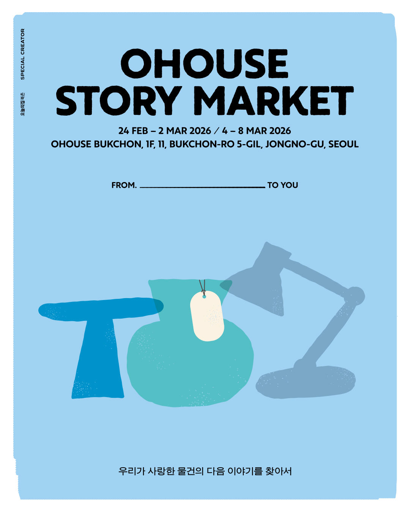
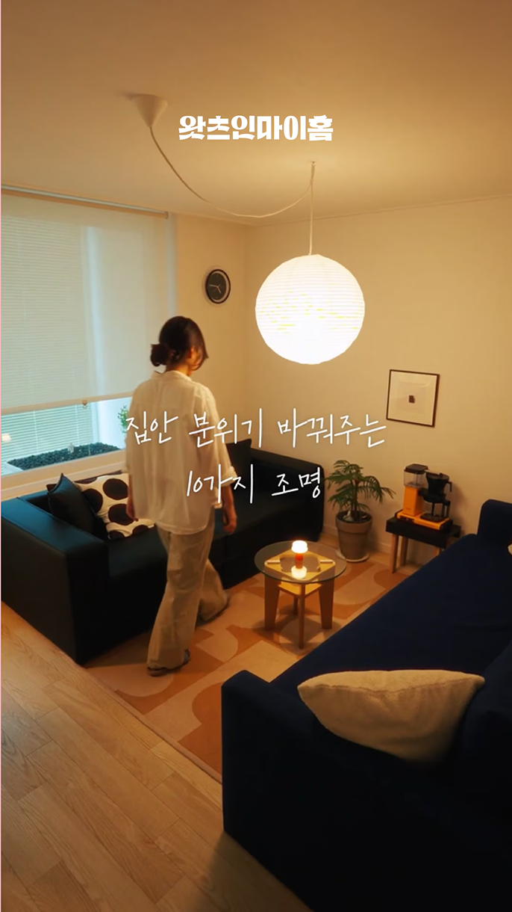

스페셜 크리에이터는 집과 일상을 자신만의 시선으로 바라보고,
그 안에서 발견한 취향과 이야기를 더 많은 사람과 나누는 오늘의집 대표 홈·리빙 크리에이터입니다.
한 사람이 나눈 영감은 또 다른 사람의 일상에 새로운 가능성을 엽니다.
오늘의집은 그 가능성의 문을 여는 스페셜 크리에이터를 '영감의 키(Key)'라고 믿습니다.
그 의미를 담아, 키를 형상화한 트로피를 스페셜 크리에이터에게 전합니다.
오늘의집은 약 5만 명의 홈·리빙 크리에이터 중 자신만의 시선으로
영감을 전하는 분들을 스페셜 크리에이터로 선정해 다양한 활동과 꾸준한 성장을 지원합니다.

Brand Collaboration / 브랜드 협업

Space Project / 공간 프로젝트

Space Project / 공간 프로젝트

Space Project / 공간 프로젝트

Branded Content / 브랜디드 콘텐츠
선정 이후 첫 만남부터 브랜드 협업과 다양한 활동, 페어웰까지
취향과 경험을 나누며 자신만의 이야기를 넓혀갑니다.
1. 오프닝 밋업
취향과 이야기를 나누며 서로를 알아가는 첫 만남
2. 브랜드 콜라보
브랜드와 새로운 결과물을 만들어가는 협업
3. 스페셜 크리에이터 활동
자신만의 시선과 이야기를 더 넓게 펼치는 활동
4. 오프라인 밋업
서로의 경험에서 새로운 영감을 발견하는 시간
5. 페어웰
지나온 시간과 성장을 돌아보는 마무리
직접 만나 나누는 시간
서로의 취향과 경험을 편하게 이야기하며 가까워지는 밋업과 클래스가 열립니다.
함께한 시간에 마음을 담아
더 다양한 활동과 성장을 위한 지원부터 함께한 시간을 기념하는 선물까지
감사와 응원의 마음을 담아 전합니다.
1. 호텔 키 트로피
2. 명함
3. 브랜드 콜라보 굿즈
4. 프리미엄 가구 협찬
5. Farewell Gift
새로운 만남과 프로젝트는 어떤 변화를 만들었을까요?
그 시간을 함께한 크리에이터들의 솔직한 목소리를 들어보세요.
기록이 열어준 새로운 기회
저만을 위한 놀이였던 일이 지금의 집으로 이사하며 다른 사람과 나누는 기록으로 바뀌었어요. '내 기록이 누군가에게 도움이 될 수도 있구나' 하는 보람과 제 취향에 공감해 주신 분들을 향한 감사도 느꼈어요. 새로운 협업 기회를 마주할 때마다 설레기도 하고요.
좋아하는 일을 잘하고 있다는 기쁨
트로피를 보니 '내가 좋아하는 일을 조금은 잘하고 있구나' 싶어 괜히 행복해져요. 앞으로도 '매일이 동화처럼 느껴지는 집'이라는 저만의 시선으로 오늘의집의 다양한 가치와 경험을 더 많은 분께 따뜻하게 전하고 싶어요.
내 취향을 믿게 된 시간
오하우스 시즌 9와 10을 거쳐 콘텐츠 수익화 명예의 전당에도 오르며 제게 많은 변화가 생겼답니다. 집을 바라보는 시선이 한층 따뜻해졌고, 제 취향에도 자신감이 생겼어요.
일상이 된 기록, 기록이 된 집
오늘의집과 집에 대한 이야기를 차곡차곡 쌓아온 시간이 스페셜 크리에이터 자리까지 이어진 것 같아 감회가 새로워요. '집'을 기록하고 나누는 일이 제 일상에 얼마나 깊이 자리 잡았는지도 다시 느꼈어요.
다음 문을 열 Key Creator를 기다립니다
집과 일상에서 발견한 자신만의 시선과 이야기를 오늘의집과 더 넓게 펼쳐보세요.